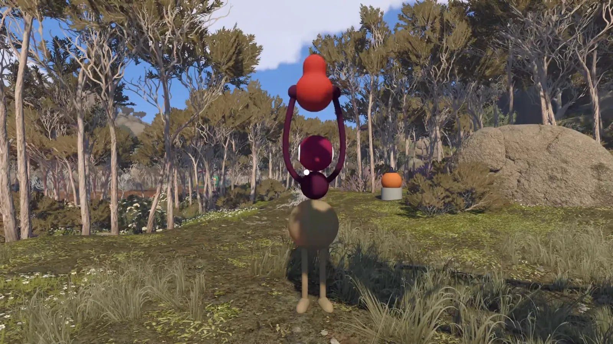
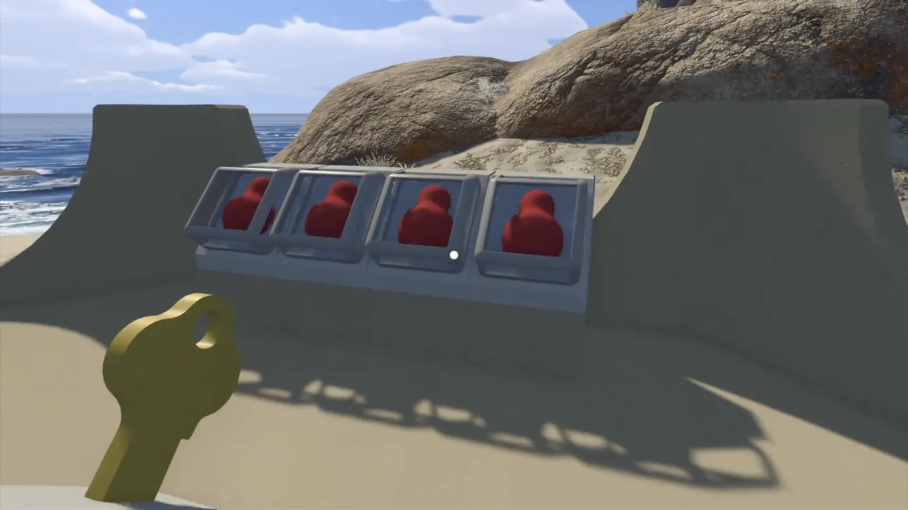

Illustrated guide
How to Find the Map in Big Walk
The first thing that strikes you in Big Walk is how enormous the island is, and the game gives you no built-in map. It does hand you a map item, though: a fold-out paper version and a 3D model of the whole island. Read it right and you can use it to find anywhere on the island. This guide shows you how to get it for yourself.
- 01
Complete puzzles to collect 5 rewards

Every solved puzzle pays out one red object. You need five of them. This step is not about finding the map, but about gathering the red objects first. The key is locked in the red tower behind a machine, and that machine only opens for five red objects, which you get from solving puzzles.
The island holds plenty of puzzles, each set at one distinctive landmark. You don't have to finish them all — five is enough. The easiest route is to stick near the red tower (3670, 1400); there are more than five puzzles you can solve around it, so pick any five. The five below sit closest to the tower, are the quickest to solve, and are the set most people record.
Soundproof room (3760, 1430). A green hut at the end of the path below the tower. The soundproofed control room inside locks you in, and a stone lights up on a panel. The person in there points to a button on the wall outside and gets the other player to press it. Each correct press fills more of a long black screen on the wall, and around ten repeats earns the gourd. The trapped player can't see the outside panel, so it all comes down to shouting.
Beach maze (3840, 1350). On the beach south-west of the red tower you split up. The maze has a clockwork timer on the left and its slot on the right, and at the corner where the two routes end there's a window you can talk through. The one holding the timer passes it over, the other drops it into the right slot, and you're done — the trick is keeping it from stopping halfway.
Ball relay (3740, 1620). South-east of the red tower, through the valley and into the forest, a deep violet-blue platform holds a ball balanced on its point. The carrier can't move, so you pass it along: stand in front of them, take the handover, and hand it off again. The more of you there are, the longer the chain, and each pass you should stand as far away as you can. Carry it from the start platform up to the end platform on the slope; a lantern set beside the end before dark makes it far easier to spot.
Basketball hoop (3830, 1560). In the same forest as the relay. Throw the lantern or glowing ball into the overhead hoop and fill the meter — two players need about eight makes between them. Sorting out the angle first saves a lot of back-and-forth.
Tomato launcher (3880, 1520). You can spot it far off from the top of the red tower, overlooking a small train station. One player fires the yellow launcher on the left and a tomato-shaped egg timer is shot down onto the ground below the platform. Another player grabs it and throws it back up to their teammate, who slots it into the green socket on the right of the platform. Get into position below before you fire, so you can catch it before the timer lands.
- 02
Get the key from the red tower

Slide all five red objects into the machine, and the gold key pops out. The red tower stands on a clifftop, big enough that you can't miss it. Head inside and climb to the roof. At the top there's a console with five slots. Slide your five red gourds in one by one; once the fifth one lights up, the gold key pops out of the back of the console. Leave out even one and it won't appear.
The key does look like a key, but its shape is plain — none of the teeth a real key has. As it is, it won't open anything. It has to be cut into the right shape first before it can open the map room.
- 03
Cut the key
What you're holding is only a blank. It has to be cut through five machines, following the arrows. Start at the first cutter by the red tower door. The order and the spots go like this: the one by the tower door, the one on the road beside a few rocks as you head down the hill, the one by a tree, the one at the edge of the entrance to the double-disc red area, and finally the last one to the left of the map room stairs, right before the door. Each cutter points you to the next one.
- 04
Head to the map room

Past the blue doorway, the map is waiting in both paper and 3D form. Walk down the hillside towards the huge red round platform — you can see it from the top of the tower. Past the first radio station, a forest path on the left of the corridor is the way in; just follow the arrows on each key-shaping machine. The map room is the blue tunnel building on the right. It isn't in the blue tower; it's further up the hill, the same colour as the blue tower but sitting in the red area, with a long red staircase leading to its door.
Push the shaped key into the big blue door and step inside. Take the portable map and compass from the table. This is the only navigation map in the whole game, and it's the basis for finding your way from here on. Stepping into the room for the first time also unlocks the Big View achievement.
With the map in hand you can now take on the harder parts of the island, like the 4166/1899 coordinate sign and the green seat speaker puzzle.